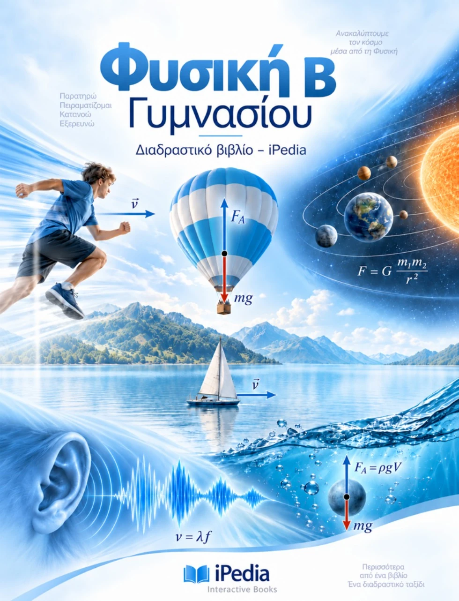
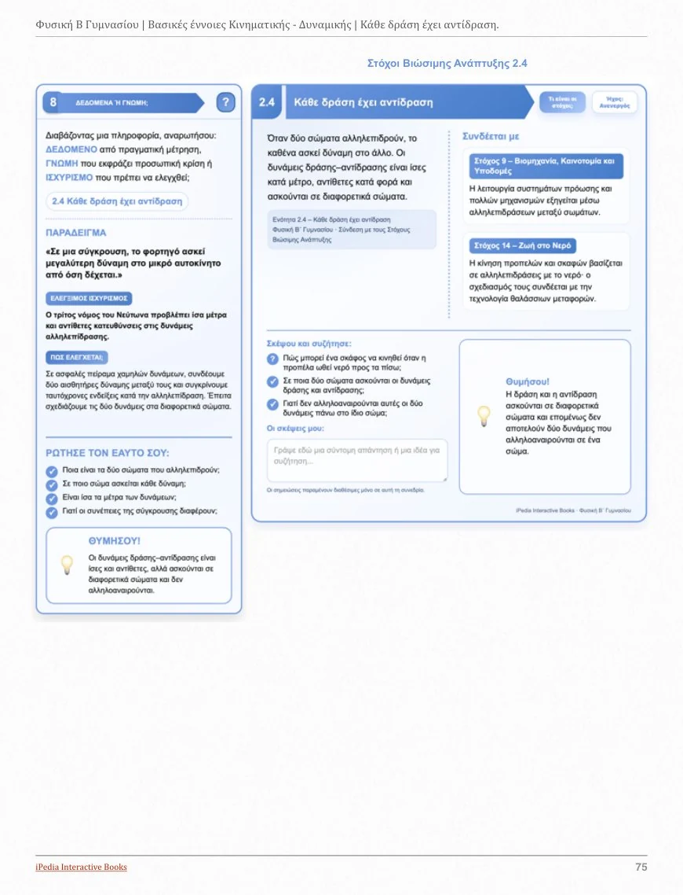
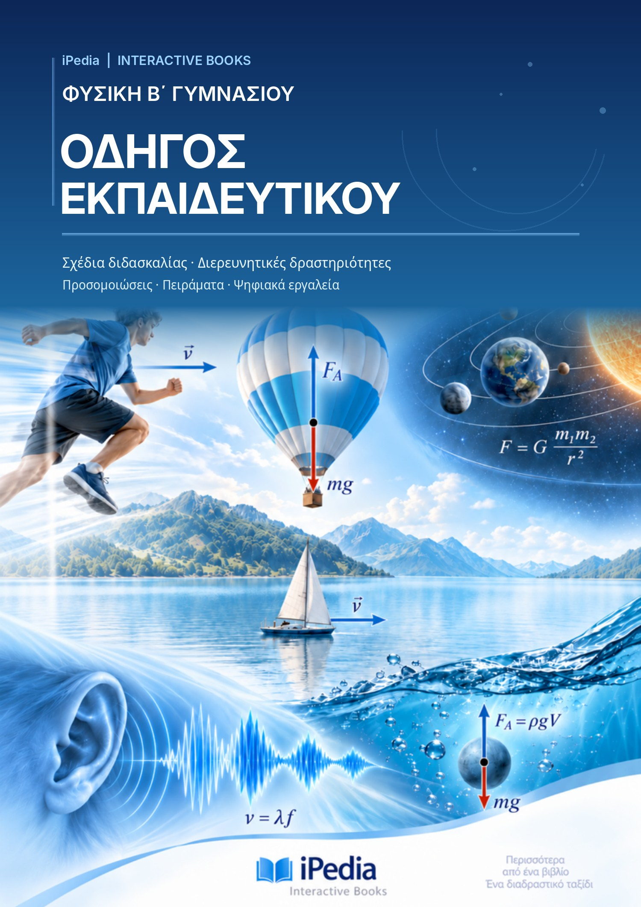

Πειράματα & προσομοιώσεις
Μεταβολή παραμέτρων, παρατήρηση, υποθέσεις, μετρήσεις και έλεγχος συμπερασμάτων.
Το διαδραστικό βιβλίο της iPedia που μετατρέπει τις φυσικές έννοιες σε εμπειρίες: παρατήρηση, πείραμα, ανακάλυψη και κατανόηση.

Δεν είναι άλλο ένα PDF με κείμενο, εικόνες και barcode. Το βιβλίο συνδυάζει επιστημονικά οργανωμένη ύλη με πλούσιο και σύγχρονο ψηφιακό υλικό που ενεργοποιούν τον μαθητή.
Μεταβολή παραμέτρων, παρατήρηση, υποθέσεις, μετρήσεις και έλεγχος συμπερασμάτων.
Πολύπλοκα φαινόμενα γίνονται περισσότερο προσιτά με εικόνες, μοντέλα και δυναμικές αναπαραστάσεις.
Σύνδεσε μετρήσεις και μαθηματικές σχέσεις με γραφικές παραστάσεις και φυσικά συμπεράσματα.
Ερωτήσεις κατανόησης, διαδραστικά τεστ, επαναλήψεις και αξιολογήσεις σε όλη την πορεία της μελέτης.
Διερευνητικές δραστηριότητες με οργανωμένα βήματα, καταγραφή δεδομένων και τεκμηρίωση.
Κάρτες μαθήματος, σύνδεση με το Πρόγραμμα Σπουδών και εργαλεία αξιολόγησης και αναστοχασμού.
Μια συνεκτική μαθησιακή διαδρομή: πρώτα τα εργαλεία της Φυσικής, έπειτα οι δυνάμεις, η κίνηση, η ενέργεια και τα κύματα.
Μετρήσεις, φυσικά μεγέθη, διανύσματα, μεταβολές και γραφικές παραστάσεις.
Σύστημα αναφοράς, τροχιά, θέση, μετατόπιση, ταχύτητα και βασικά χαρακτηριστικά δυνάμεων.
Συνισταμένη δύναμη, αδράνεια, πρώτος νόμος του Νεύτωνα και ευθύγραμμη ομαλή κίνηση.
Βάρος, κάθετη αντίδραση, τριβή, πίεση, υδροστατική, αρχή Pascal και άνωση.
Επιτάχυνση, δεύτερος νόμος του Νεύτωνα, ελεύθερη πτώση, κυκλική κίνηση και ταλάντωση.
Κινητική και δυναμική ενέργεια, έργο δύναμης και αρχή διατήρησης της ενέργειας.
Μηχανικά και σεισμικά κύματα, ήχος και φαινόμενα ανάκλασης, διάθλασης και απορρόφησης.
Μια μικρή δοκιμή: άλλαξε τη δύναμη και τη μάζα και παρακολούθησε πώς μεταβάλλεται η επιτάχυνση ενός σώματος.
Για σταθερή συνισταμένη δύναμη, η επιτάχυνση αυξάνεται όταν αυξάνεται η δύναμη και μειώνεται όταν αυξάνεται η μάζα.
Η προσομοίωση είναι ειδική επίδειξη της παρούσας ιστοσελίδας, εμπνευσμένη από την ύλη του βιβλίου. Δεν αποτελεί αυτούσιο ψηφιακό αντικείμενο του eBook.
Προεπισκόπηση σελίδων από το διαδραστικό βιβλίο. Επίλεξε μια σελίδα για μεγέθυνση.

Έτοιμη διδακτική υποστήριξηΤο βιβλίο δεν περιορίζεται στην υποστήριξη της ατομικής μελέτης. Προσφέρει δομημένα εργαλεία για τη διδακτική οργάνωση, τη διερεύνηση και την αξιολόγηση στην τάξη.
Ένας αναλυτικός οδηγός διδασκαλίας για τη Φυσική Β΄ Γυμνασίου της iPedia, οργανωμένος ανά διδακτική ενότητα. Περιλαμβάνει μαθησιακούς στόχους, αξιοποίηση των διαδραστικών εφαρμογών, προτεινόμενη πορεία μαθήματος, συχνές παρανοήσεις, αξιολόγηση και διαφοροποίηση.
Η έκδοση PDF είναι διαμορφωμένη για εκτύπωση σε A4.

Σύντομες απαντήσεις για τη χρήση και το εκπαιδευτικό περιεχόμενο του βιβλίου.
Ένα απλό PDF περιέχει στατικό κείμενο και εικόνες: ο μαθητής κυρίως διαβάζει και παρατηρεί. Στο διαδραστικό βιβλίο της iPedia συμμετέχει ενεργά: μεταβάλλει παραμέτρους σε προσομοιώσεις, πραγματοποιεί εικονικά πειράματα, εξερευνά τρισδιάστατα μοντέλα και απαντά σε διαδραστικές ασκήσεις και τεστ με ανατροφοδότηση. Αντί να βλέπει μόνο την περιγραφή ενός φυσικού φαινομένου, μπορεί να το διερευνά, να ελέγχει τις υποθέσεις του και να συνδέει τη θεωρία με την πράξη.
Σε μαθητές και μαθήτριες της Β΄ Γυμνασίου, σε εκπαιδευτικούς Φυσικής και σε όσους θέλουν να μελετήσουν οργανωμένα τις βασικές έννοιες της Μηχανικής, της Ενέργειας και των Κυμάτων.
Προσομοιώσεις, εικονικά πειράματα, διαδραστικές ερωτήσεις, τεστ, φύλλα εργασίας, 3D μοντέλα, διαγράμματα, συνόψεις και δραστηριότητες αξιολόγησης.
Ναι. Περιλαμβάνονται κάρτες μαθήματος, σύνδεση με το Πρόγραμμα Σπουδών και εργαλεία αξιολόγησης, κατάλληλα για τον σχεδιασμό διερευνητικών μαθημάτων.
Χρησιμοποίησε το κουμπί «Δες το στο Apple Books» για τη σελίδα του βιβλίου στο Apple Books, όπου εμφανίζονται οι διαθέσιμες επιλογές προεπισκόπησης και απόκτησης.
Ανακάλυψε ένα βιβλίο όπου η μάθηση ξεκινά από την περιέργεια και προχωρά με πειραματισμό.